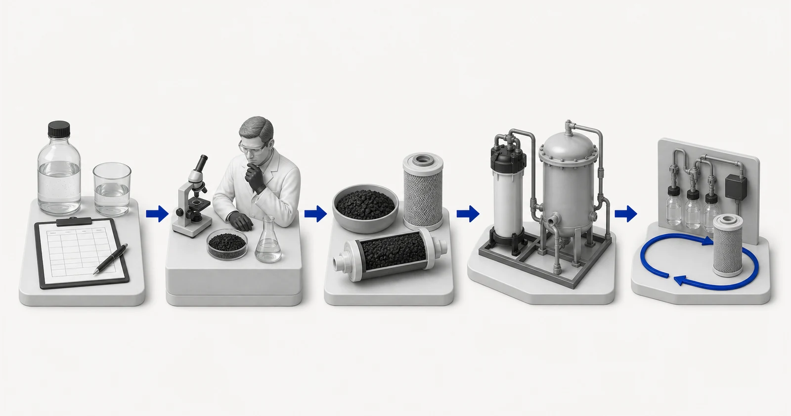

Муниципалдык жана ичүүчү суу
Оксиденттерди, даам жана жыт маселелерин, органикалык заттарды, агымды жана сунушталган картридж же система үчүн талап кылынган так далилдерди карап чыгыңыз.
Активдештирилген көмүр суудан же процесс-суюктуктун отчетунан, максаттуу кошулмалардан, агымдан, байланыш шарттарынан, жабдуулардан жана далилдерден кантип тандаларын билип алыңыз. Yuchen Water активдештирилген көмүр материалдарын жана картридждерди камсыздайт жана тиешелүү жабдууларды техникалык колдоону камсыз кылат. Бул борбор сатып алуучулардан алгач товарды тандоону суранбастан чечим чыгаруу жолун түшүндүрөт.

Концептуалдык иллюстрация. Сыноонун натыйжалары, продукциянын сертификаты же инженердик чийме эмес.
Оксиденттерди, даам жана жыт маселелерин, органикалык заттарды, агымды жана сунушталган картридж же система үчүн талап кылынган так далилдерди карап чыгыңыз.
Көмүртектин ролун ыйгаруудан мурун минералдарды, металлдарды, булуттуулукту, органикалык жана биологиялык шарттарды текшериңиз.
Максаттуу кошулманы, процесстин өзгөрмөлүүлүгүн, байланыш шарттарын, идиштин милдетин жана ийгиликке мониторингди аныктаңыз.
Активдештирилген көмүрдүн документтештирилген кычкылдантуучу же органикалык коркунучка жооп берер-келбесин жана этаптын сакталышын баалаңыз.
Толук агым химиясын жана процесс тарыхын колдонуу; көмүртек ири дарылоо поезд бир кадам болушу мүмкүн.
Жалгыз этикеткадан тандоонун ордуна курулуш, өлчөмдөр, байланыш, агым, далил жана тейлөө планын дал келтириңиз.
Сууну тазалоодо активдештирилген көмүр кайда туура келерин, ал эмнени өзү аныктай албасын жана көмүр форматын сунуштоодон мурун жеткирүүчүгө кандай суу маалыматтары керек экенин түшүнүңүз.
Гидди окуңуз →Орнотуу ролу, байланыш үлгүсү, басымдын жүрүм-туруму, тейлөө ыкмасы жана далил талаптары боюнча активдештирилген көмүр форматтарын салыштырыңыз, алардын атын алмаштыра турган катары кароонун ордуна.
Гидди окуңуз →Кокос кабыгынын, көмүрдүн жана жыгачтын негизиндеги көмүртектин спецификацияларын, йоддун санын, торду, күлдү, нымдуулукту жана катуулукту аларды колдоого алынбаган аткаруу дооматтарына айландырбастан кантип окуу керек экенин билип алыңыз.
Гидди окуңуз →Агым, керебеттин көлөмү, EBCT, басымды жоготуу, ийгиликке мониторинг жүргүзүү, идиш конфигурациясы жана тейлөөнү пландаштыруу өнөр жай гранулдуу активдештирилген көмүр долбоорун кантип түзөөрүн көрүңүз.
Гидди окуңуз →PFAS активдештирилген көмүргө карата дооматтарды кошулма, суу матрицасы, керебет шарттары, сыноонун акыркы чекити, сертификация чөйрөсү жана тейлөө талаптары боюнча ар бир продуктка бир натыйжа бербестен карап чыгыңыз.
Гидди окуңуз →Универсалдуу календардык интервалдын ордуна мониторинг жана тутум далилдерин колдонуу менен көмүртек чыпкасынын түгөнүп калышын, жылышын, канализациясын, айыптарын, басымдын жоголушун, токтоп калышын жана тейлөө планынын боштуктарын диагностикалаңыз.
Гидди окуңуз →Билим кластерин улантыңыз, тандалган үлгү далилдерди анын белгиленген чегинде гана карап чыгыңыз, продукт форматтарын салыштырыңыз же отчетту техникалык кароого тапшырыңыз.
Гидди окуңуз →Бул булактар дарылоо принциптерин же күбөлүк чектерин түшүндүрөт. Алар Yuchen Water продукциясын тастыкташпайт жана долбоорго тиешелүү далилдерди алмаштырышпайт.
Тандалган сыноо далилин карап чыгуу →Толук отчет жок болсо, Yuchen Water жетишпеген тесттерди аныктап, алдын ала жетекчиликти гана бере алат. Акыркы материал, жабдууларды жайгаштыруу жана тейлөө негизи текшерилген маалыматтарды жана учурдагы далилдерди талап кылат.
Жок. Булакты, максатты, агымды, жабдуулардын контекстти жана жеткиликтүү отчетту жөнөтүңүз. Формат техникалык кароонун бир бөлүгү болуп саналат.
Ооба. Материалдык жана картридж менен камсыздоо негизги чөйрө болуп саналат, зарыл болгон учурда тиешелүү жабдууларды техникалык колдоо.
Жок. Сыноо далилдери аныкталган үлгүгө, конструкцияга, ыкмага жана шарттарга гана тиешелүү.
Жок. Барактар жөрмөлөөчү, структуралаштырылган, локалдашкан маалымат менен камсыз кылат, бирок эч кандай тышкы платформанын индекстөө же цитаталоо чечимине кепилдик берилбейт.